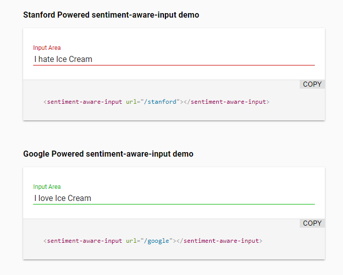
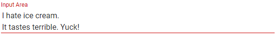
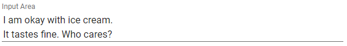
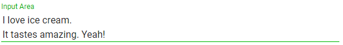

Building a sentiment aware Polymer input control
A tale of a UI experiment and using CoreNLP in Scala
2017-10-01If you scroll through your Twitter feed sometimes you may see a lot of negativity or tweets that make you ask yourself “Did this person read this before they posted?”. This made me think of the times I might have done this, and whether or not I would have posted so many negative tweets if I knew that most of them had a negative sentiment.
This of course brought to mind a relevant xkcd comic:
Relevant xkcd https://xkcd.com/481/
Instead of a virus though, I thought to build a custom input control that would passively warn the user by changing color.
The design
The intention of the control isn’t to stop people from saying certain things, so the control never blocks the user from doing what they want. It just tells the user what kind of sentiment they are conveying. This may cause people to rethink their wording, or even help non native speakers of a language better construct what they are trying to say when communicating.
So how would we implement it?
I have been using a lot of Polymer lately so my mind has been in the world of reusable components. I liked the idea of someone using a component that fit in with the other Material Design paper elements, but being able to pass in whatever url they need in order to get a sentiment between -1 and 1, 0 being neutral. This leaves the user of the element to determine how that final sentiment is decided.
In the end, the element it turned out like this:

When I started out with the experiment. The first thing I wanted to know was what I would get back from sentiment APIs. I wanted to build a small back end for this control to prove the concept and make sure that it’s actually viable. I knew that I would want to test it against Stanford’s CoreNLP eventually, because I wanted this to be viable without sending your data to a third party However, for starters I just wanted to see the thing work. Knowing that the easiest way to use CoreNLP is through it’s native Java API, I used that as the excuse to use Scala.
Getting numbers in return for words
I created an akka-http app with a single endpoint: “/sentiment”. I decided that the first goal was a working demo, and that CoreNLP was not number 1 on my priority list. So at this point I decided to just get a number back from the Google API. I luckily landed on the Quickstarts section of the documentation which not only provides a Java example of exactly what I wanted. But also provided the dependency line for sbt:
libraryDependencies += "com.google.cloud" % "google-cloud-language" % "0.24.0-beta"
A nice touch.
All I needed to do was augment the code so that it took in the body of my HTTP POST and I would have a working /sentiment endpoint.
Once I had the result I wanted, building the Polymer element was easy. I just bound the text value of the input box to the body of the post and let the debounce of iron-ajax do the work in figuring out whether or not it should send the request.
The full code of the control below. Pretty simple stuff.
<link rel="import" href="bower_components/polymer/polymer-element.html">
<link rel="import" href="bower_components/paper-input/paper-textarea.html">
<link rel="import" href="bower_components/iron-ajax/iron-ajax.html">
<dom-module id="sentiment-aware-input">
<template>
<style>
:host {
display: block;
}
.negative {
--paper-input-container-color: #cc0000;
--paper-input-container-focus-color: #cc0000;
}
.positive {
--paper-input-container-color:#00B600;
--paper-input-container-focus-color: #00B600;
}
</style>
<div>
<paper-textarea class$="[[getClass(sentiment)]]" label="Input Area" value="{{text}}"></paper-textarea>
</div>
<iron-ajax id="ajax"
url="[[url]]"
method="post"
body="[[text]]"
content-type="text/plain; charset=UTF-8"
handle-as="text"
on-response="handleResponse"
debounce-duration="500"
auto>
</iron-ajax>
</template>
<script>
/**
* `sentiment-aware-input`
* A sentiment aware input
*
* @customElement
* @polymer
* @demo demo/index.html
*/
class SentimentAwareInput extends Polymer.Element {
static get is() { return 'sentiment-aware-input'; }
static get properties() {
return {
text: {
type: String,
notify: true,
value: "",
},
sentiment: {
type: Number,
notify: true,
value: 0.0
},
url: {
type: String,
notify: true
}
};
}
getClass(sentiment) {
if (sentiment < 0) {
return 'negative'
}
if (sentiment > 0) {
return 'positive'
}
return ''
}
handleResponse(e, request) {
this.set("sentiment", parseFloat(e.detail.response))
}
}
window.customElements.define(SentimentAwareInput.is, SentimentAwareInput);
</script>
</dom-module>
In terms of minimum specs, the app was done at this point. And this is where the Ice Cream examples came from.
  
Introducing CoreNLP to the mix
CoreNLPs sentiment functionality is pretty young, finding actual code snippets was a little difficult. So I relied a lot on related Stack Overflow questions for examples, and for anyone who wants to import the library in sbt, here’s what you need to add:
"edu.stanford.nlp" % "stanford-corenlp" % "3.8.0",
"edu.stanford.nlp" % "stanford-corenlp" % "3.8.0" classifier "models",
"edu.stanford.nlp" % "stanford-parser" % "3.8.0"
Once added I got to work writing a function that would get me the same sorts of values I was getting back from the Google API, but there were two problems. First, CoreNLP analyses one sentence at a time and returns the sentiment for each individually, the other issue is that instead of a number, CoreNLP returns a string. I decided to use Scala’s pattern matching to solve this problem by simply counting the string that occurred most and then mapping the sentiment to either -1 , 0 or 1. I decided on a hard mapping because I did not need the precision that Google’s API gave me for this particular purpose.
def sentimentCounter(list: List[String]): List[Int] = {
list.foldLeft(List[Int](0, 0, 0))((acc, item) => {
item match {
case "Positive" => List(acc.head + 1, acc(1), acc(2))
case "Very positive" => List(acc.head + 2, acc(1), acc(2))
case "Negative" => List(acc.head, acc(1) + 1, acc(2))
case _ => List(acc.head, acc(1), acc(2) + 1)
}
})
}
def analyzeWithCoreNLP(text: String): Double = {
if (text.isEmpty) return 0.0
val props = new Properties()
props.setProperty("annotators","tokenize, ssplit, pos, lemma, parse, sentiment")
val pipeline = new StanfordCoreNLP(props)
val annotation = pipeline.process(text)
val sentences = annotation.get(classOf[CoreAnnotations.SentencesAnnotation])
val sentimentStringValuesBuf = scala.collection.mutable.ArrayBuffer.empty[String]
sentences.forEach { sentence =>
val sentiment = sentence.get(classOf[SentimentCoreAnnotations.SentimentClass])
sentimentStringValuesBuf += sentiment
}
indexOfHighest(sentimentCounter(sentimentStringValuesBuf.toList)) match {
case 0 => 1.0
case 1 => -1.0
case 2 => 0.0
}
}
One thing to note here is that at this point CoreNLP was trying to log stuff and couldn’t, I had to bring in slf4j before it started to work
"org.slf4j" % "slf4j-simple" % "1.6.4",
Once I got that working I split up the API into the endpoints /google and /stanford. This enabled me to manually test if I was getting similar results from both implementations.
The results
Google is obviously more accurate, it analyses entire documents, not just sentences. So in long form it probably has something more sophisticated than my simple pattern matchers, but for most of the kind of things I could come up with, CoreNLP held up. Especially for review text which the internal neural net is actually trained on.
What I’m really happy about is that the concept of the control seems to work, and it also works across different core implementations of the sentiment analysis. It’s also a good reminder that you can actually implement machine learning powered features in every day code without going deep into it’s inner workings and I hope to see these sorts of features pop up in more places because of that.
Going forward, the next step would be for me to extract the element from my GitHub project into something separate that can be published on webcomponents.org and iron out any kinks that it may have. I also had fun using CoreNLP and I’m interested to try out some of it’s other features.